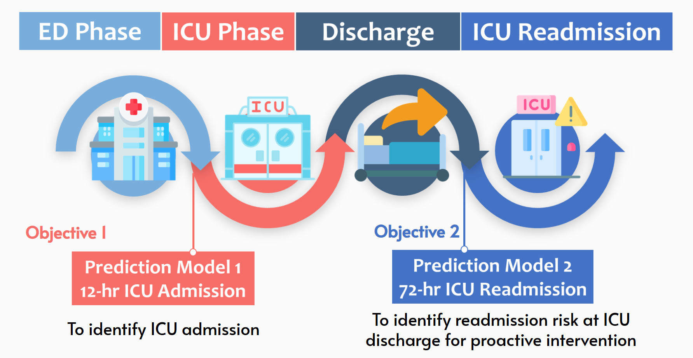
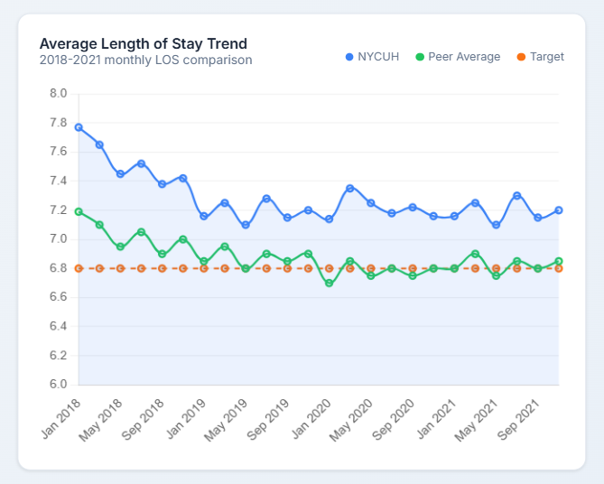
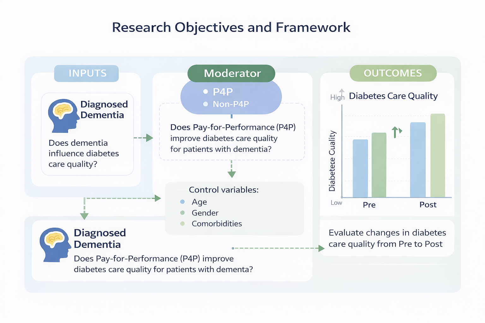
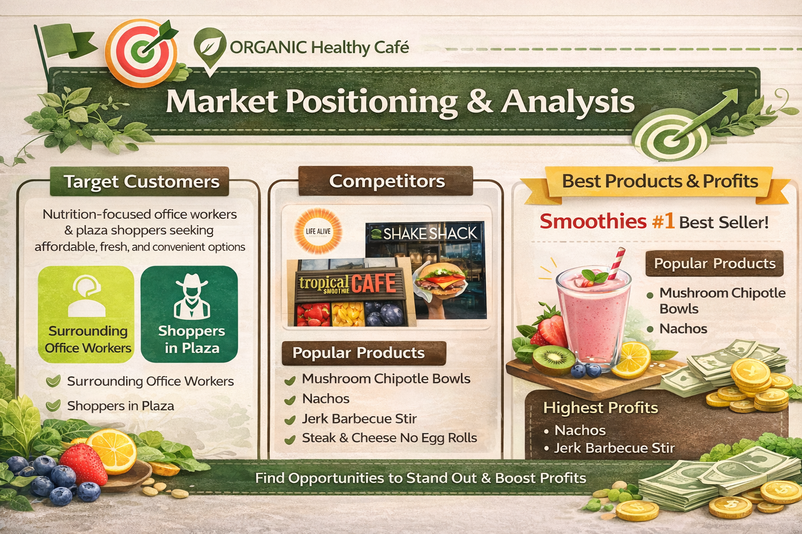
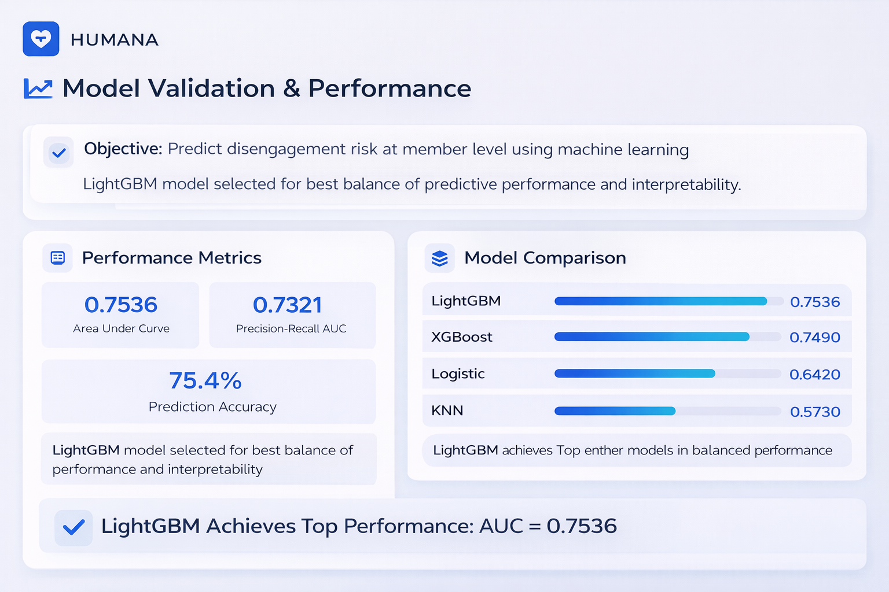
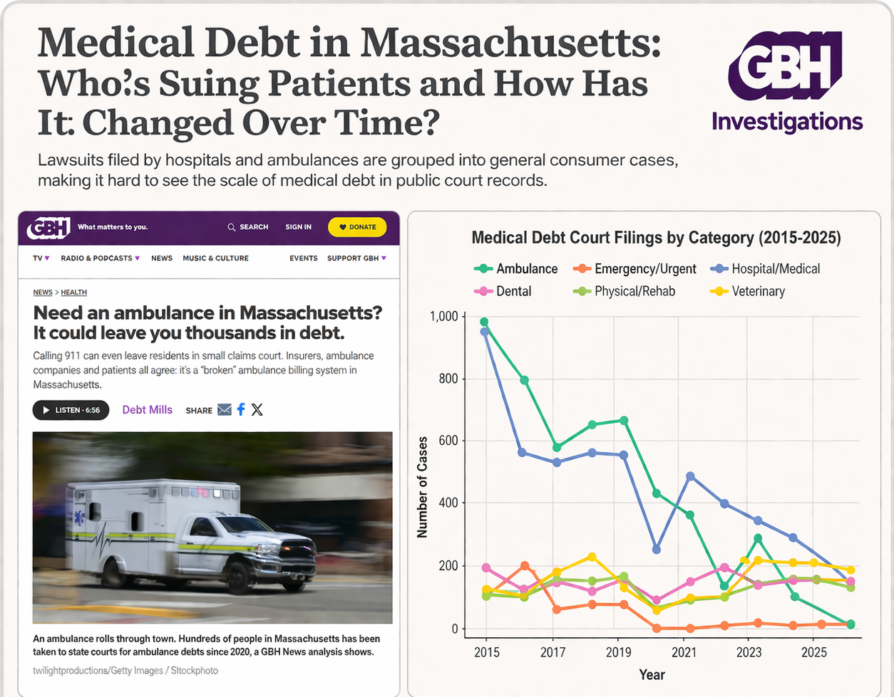
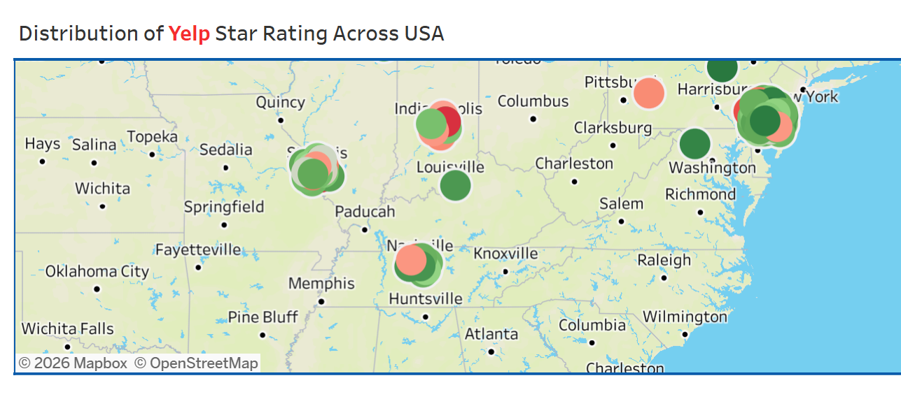
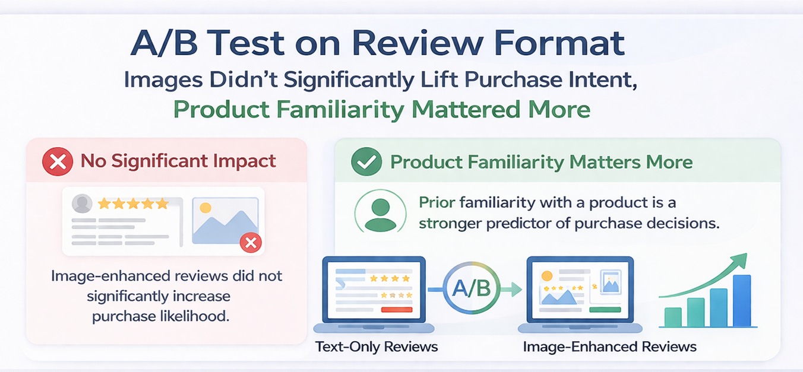
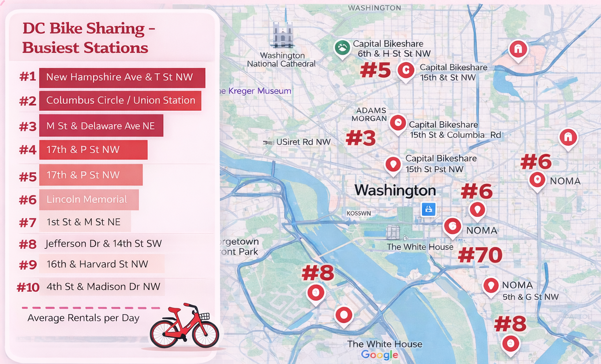

selected work
Projects

Forecasting Real-time ICU Demand
Bridging the gap in capacity planning by forecasting short-term ICU patient flow and readmission risk using MIMIC-IV data.
View Project →
Tackling ED Overcrowding
Optimizing length of stay and discharge workflows in the emergency department to improve patient throughput and bed turnover.
View Project →
Evaluating Health Policy Impact
Analyzing dementia and pay-for-performance effects on diabetes care quality using population-level NHIRD claims data.
View Project →
Digital Growth & Market Strategy
Advised an organic F&B SME through the IXL Accelerator with value chain analysis, operating improvements, and go-to-market recommendations.
View Project →
Predicting Preventive Care Engagement
Built a LightGBM model to identify at-risk Medicare members and prioritize outreach for preventive care interventions.
View Project →
Exposing Medical Debt (WGBH)
Engineered a fuzzy-matching pipeline to surface predatory collection patterns across 3.7M+ court records for investigative journalism.
View Project →
Yelp Customer Review Analytics
Used SQL, BigQuery, and Tableau to identify review and service patterns linked to restaurant engagement outcomes.
View Project →
A/B Testing E-commerce Behavior
Measured the causal impact of image reviews on conversion rates using experiment design, hypothesis testing, and decision thresholds.
View Project →
Capital Bikeshare Operations
Combined spatial-temporal analysis with weather and demand modeling to inform rebalancing strategy and station-level planning.
View Project →